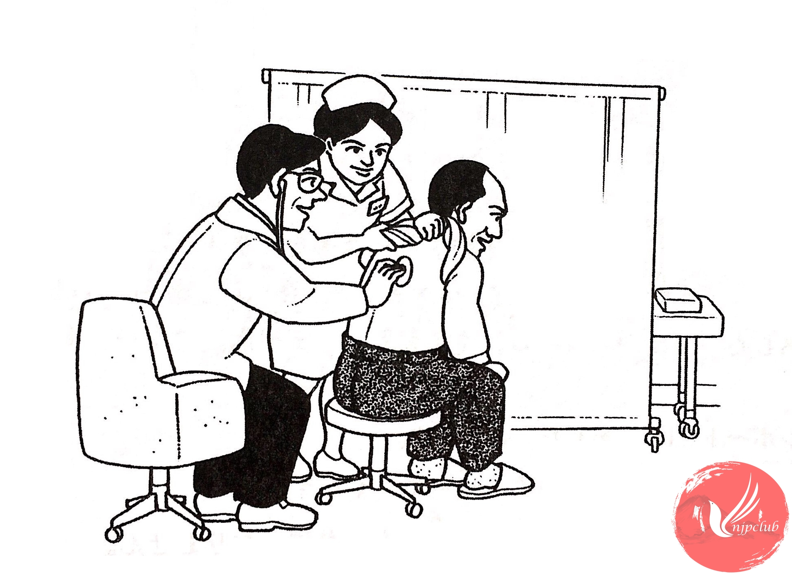

| 医者： |
どう しましたか。 |
| 松本： |
きのうから のどが 痛くて、熱も 少し あります。 |
| 医者： |
そうですか。 ちょっと 口を 開けて ください。 |
| ‐ ‐ ‐ ‐ ‐ ‐ ‐ ‐ ‐ ‐ ‐ ‐ ‐ ‐ ‐ ‐ | |
| 松本： |
かぜですね。２、３日 ゆっくり 休んで ください。 |
| 松本： |
あのう、あしたから 東京へ 出張しなければ なりません。 |
| 医者： |
じゃ、きょうは 薬を 飲んで、 早く 寝て ください。 |
| 松本： |
はい。 |
| 医者： |
それから 今晩は おふろに 入らないで くださいね。 |
| 松本： |
はい。わかりました。 |
| 医者： |
じゃ、お大事に。 |
| 松本： |
どうも ありがとう ございました。 |